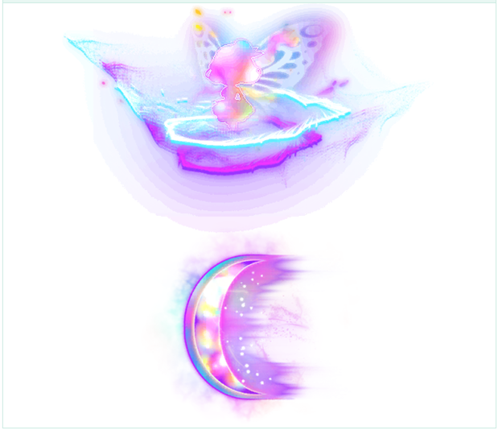
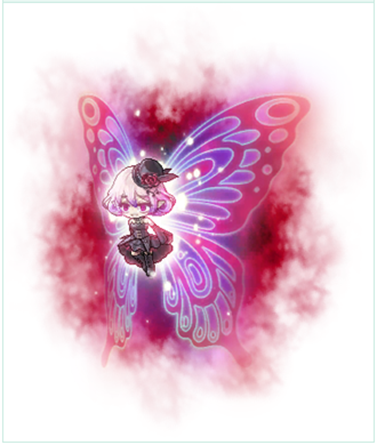
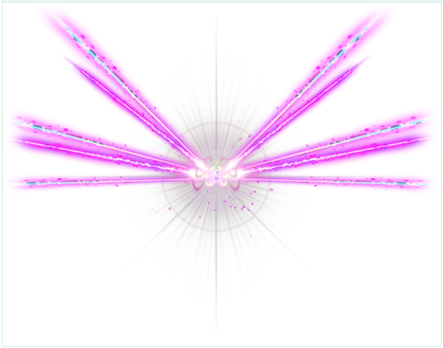

ลำดับสกิลโดยคร่าว ๆ
-
Fairy Dust

-
Charge

-
Fairy Dust
-
Fairy Dust
-
Laser Streak + Bomb (มาพร้อมกัน)

ภาพ Fairy Dust, Charge และ Laser Streak จาก
Nexon Patch Notes · 7 มีนาคม 2024
· คลิกภาพเพื่อดูขนาดเต็ม
Phase 2: Bomb และ Laser Streak มาพร้อมกัน
เตรียมรับมือทั้งสอง Mechanics ในจังหวะเดียวกัน
เมื่อจบ Laser Streak + Bomb จะวนกลับไปเริ่มที่ Fairy Dust
และเล่นลำดับเดิมซ้ำ
ถ้าเข้ามินิเกม ให้เริ่มนับลำดับใหม่หลังจบมินิเกม โดยเริ่มจาก
Fairy Dust
ลำดับนี้เป็นแนวทางคร่าว ๆ ให้ดูสัญญาณเตือนบนหน้าจอประกอบ